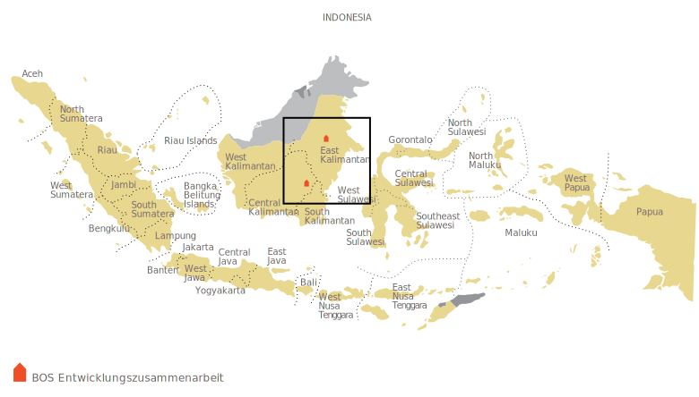
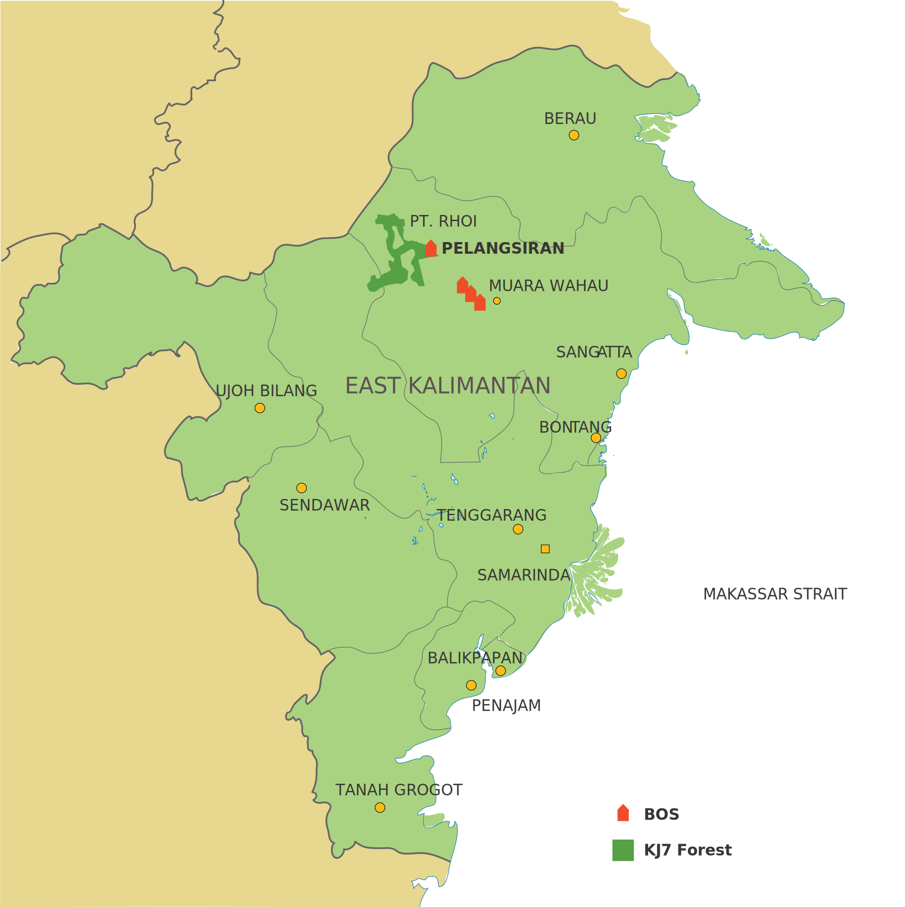

Armut und Orang-Utan Schutz: Was hat das miteinander zu tun?
Viel, denn Unterentwicklung und Ausgrenzung sind wichtige Gründe für Wilderei und Raubbau an der Natur.
Deshalb führt Borneo Orangutan Survival (BOS) in enger Zusammenarbeit mit den dörflichen Gemeinschaften nahe den Schutzgebieten Projekte in den Bereichen Einkommen, Gesundheit und Bildung durch. Damit leisten wir einen wichtigen Beitrag zur menschlichen Entwicklung marginalisierter Gruppen und zum Artenschutz in Zentral- und in Ostkalimantan.
Verortung der Projekte
Unsere Projekte in Zentralkalimantan konzentrieren sich auf die Mawas Region, ein 3‘774 km2 grosses und geschütztes Waldgebiet. Am Rande des Schutzgebietes leben rund 29‘000 Haushalte in 53 Dörfern, die teils schwer zugänglich und vergleichsweise arm sind - ein fruchtbarer Boden für illegale Aktivitäten wie Brandrodung, Wilderei, Holzeinschlag oder das Schürfen von Gold. Lokale „Kredithaie“, die Geld zu überteuerten Konditionen verleihen, kommen hier genauso auf ihre Kosten, wie Ölpalmplantagen. Land wird ihnen oft billig angeboten und günstige Arbeitskräfte stehen ausreichend zur Verfügung.
Um illegale Aktivitäten zu bekämpfen und der ansässigen Bevölkerung einen Ausweg aus der Armut jenseits der Ölpalmplantagen zu bieten, vergeben wir Mikrokredite. Damit fördern wir Initiativen der lokalen Bevölkerung zur Verbesserung ihrer Einkommenssituation. Unser Ziel ist die Schaffung von alternativen, nachhaltigen und umweltverträglichen Einnahmequellen. Ausserdem führen wir in der Mawas Region Gesundheits- und Bildungsprojekte durch.
Unsere Projekte zur nachhaltigen Entwicklung in Ost-Kalimantan befinden sich in unmittelbarer Nähe zum Kehje Sewen Forest – dem Auswilderungsgebiet der Rettungsstation Samboja Lestari.
Drei Dorfgemeinschaften zwischen der Bezirksstadt Muara Wahau und dem Auswilderungsgebiet der BOS Stiftung (BOSF) arbeiten gemeinsam mit dem Feldteam von BOSF/RHOI und einer beratenden indonesischen Nichtregierungsorganisation (LPMK) an der Verbesserung traditioneller und der Schaffung neuer, nachhaltiger Einkommensquellen, einer besseren medizinischen Versorgung, der Erweiterung der Schulbildung und der Sensibilisierung für den Natur- und Orang-Utan-Schutz. Speziell Frauen soll mithilfe von Kleinkrediten zu mehr Einfluss in den Gemeinschaften, Eigenständigkeit und Selbstvertrauen verholfen werden.

Eine Transitstation innerhalb der Grenze von Kehje Sewen unterstützen wir bei der Verbesserung ihrer Frischwasserversorgung, der Sanierung und Renovierung sanitärer Einrichtungen, der Einführung eines Abfallentsorgungs- bzw. Mülltrennungssystems und dem Aufbau eines gemeinschaftlichen Gemüsegartens mit Baumschule.